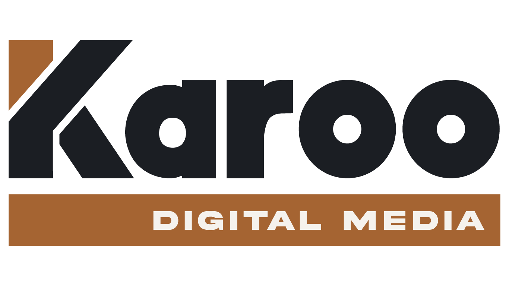
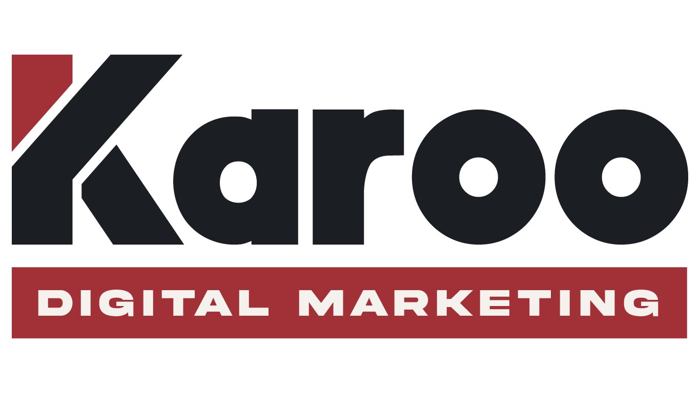
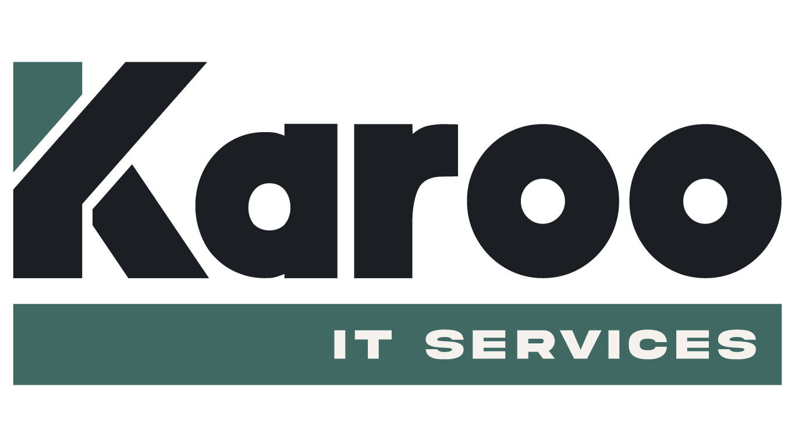
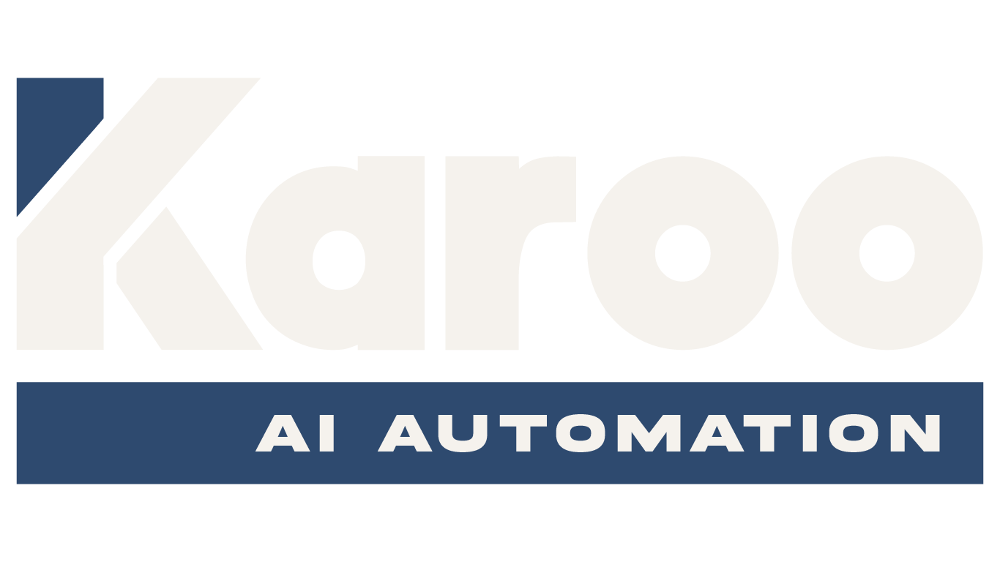

Our divisions
Every division is a genuine discipline — built from real client work, not added to a brochure. Together they cover the entire digital infrastructure of a modern business, from the surface to the systems underneath it.
Digital Media
Your website is the first thing people judge you on — and the last thing most agencies maintain properly. We build sites that perform visually and technically, then stay on the account so they keep performing.

Digital Marketing
Ads that don't have clear measurement don't have clear accountability. We run Google and Meta campaigns with full tracking scaffolding from day one — so you know exactly what's working and what isn't.

IT Services
Infrastructure is invisible when it's working and catastrophic when it isn't. We manage cloud hosting, security, and IT support for Melbourne businesses that can't afford downtime — with monitoring that alerts you before it alerts you.

AI Automation
Most businesses are sitting on thousands of hours of manual work that could be running automatically right now. We map the workflows, build the integrations, and deploy AI agents that handle the repetitive operations — so your team works on what actually matters.

Common questions
Karoo Media is a Melbourne digital agency with four service areas: digital marketing (Google Ads, Meta Ads, SEO), WordPress website development, IT services (Microsoft 365, cloud backups), and AI business automation using platforms like n8n and Make.
Yes. Most of our clients are small to medium businesses — childcare centres, trades, manufacturers, food brands, and professional services. We work across a range of budgets and tailor each engagement to what actually makes sense for the business.
Yes. Our digital marketing division runs Google Ads campaigns focused on cost per lead and real enquiries — not vanity metrics. We set up clear tracking and reporting so you can see exactly what's working.
We build WordPress websites that load fast, work on mobile, and are easy for your team to update. We connect them to your CRM where needed, and can include photography, video, and branding as part of the project.
AI automation means building systems that move data and trigger actions between your tools automatically. A lead fills out a form — it goes straight into your CRM, sends a notification to your team, and queues a follow-up. No manual copy-paste. We use n8n, Make, and AI APIs to build these systems.
Yes. Karoo IT Services handles Microsoft 365 setup and ongoing support, cloud migrations, email configuration, and backup systems for Melbourne businesses.